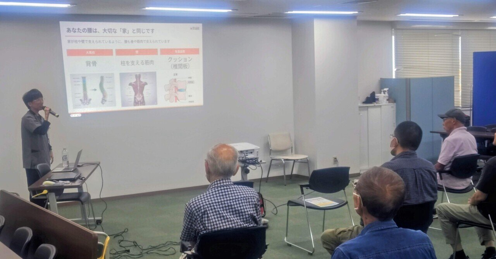

入院中の相談から、退院先の調整、地域との連携まで。
入院中の相談から退院先の調整、地域との連携まで。病院の外とつながる仕事です。
当院は47床の小さな病院ですが、外来・在宅医療・入院をひとつの場所で行い、同じ法人に介護老人保健施設とケアマネオフィスがあります。
急性期病院から受け、暮らしの場に戻し、在宅で続ける。この流れをつくるうえで、医療ソーシャルワーカーは要になる職種です。勉強会の開催・運営を通じて、地域の事業者との関係づくりにも関わっていただきます。
採用情報はジョブメドレーにも掲載しています。ご質問はお電話でも承ります。
本多病院 03-3732-2331（代表）